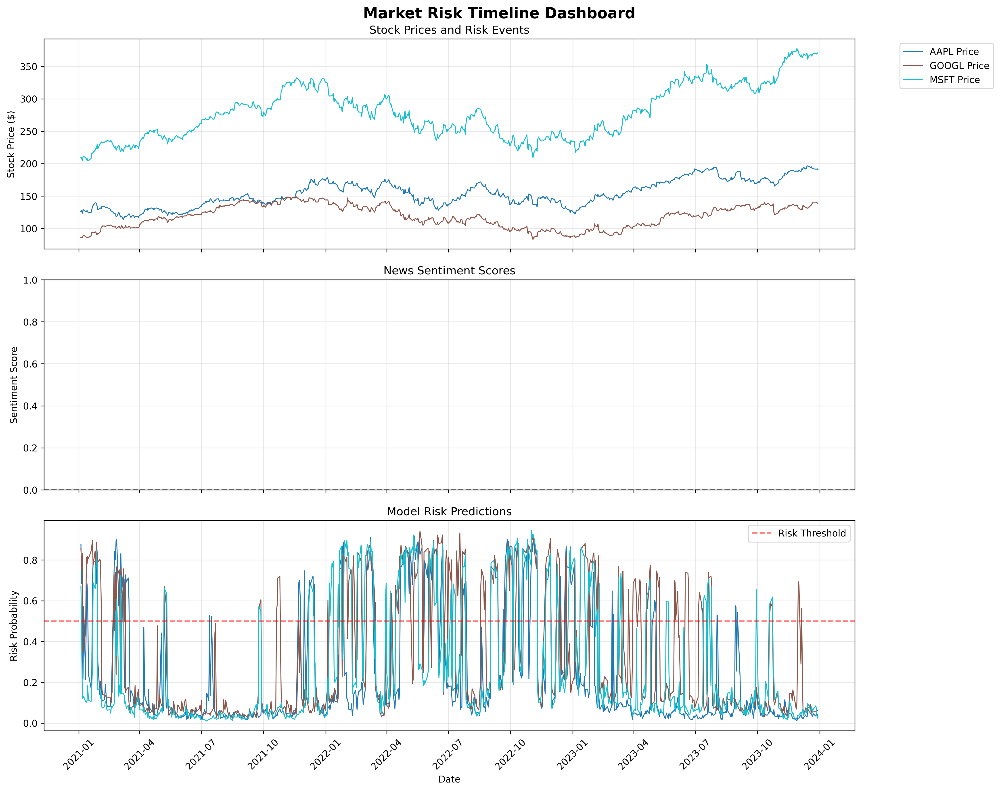

Comprehensive analysis of market risk using stock prices, news sentiment, and SEC filings
Interactive timeline showing stock prices, risk events, sentiment scores, and model predictions
Static timeline view of risk events and stock price movements
Analysis of news sentiment patterns and correlation with stock returns
Correlation matrix of risk-related features